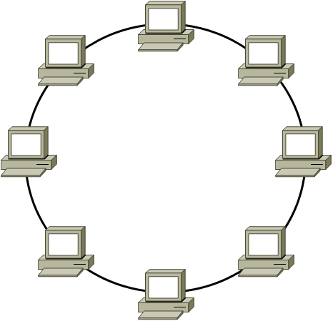

Виды топологий
Шина
Шина - это одна из самых первых топологий, которая на физическом уровне связывала устройства. Топология шина состоит из огромного по длине кабеля, к которому и подключались все устройства, образовывая локальную сеть. Такую топологию было очень легко реализовать засчёт её последовательности. Но на этом преимущества заканчивались, ведь топология совершенно не отказоустойчива. Если где-то случался разрыв кабеля, то из строя выходила вся сеть.

Кольцо
В данной архитектуре устройства соединяются последовательно, образуя замкнутый контур: каждый узел связан с двумя соседними (предыдущим и следующим). Данные передаются в одном направлении — от узла к узлу по цепочке. Каждое устройство выполняет две функции: принимает сигнал от предыдущего узла, передает его дальше следующему, выступая ретранслятором.
Звезда
Звезда - последняя топология в нашем списке. В данной топологии все устройства подключаются к центральному узлу, в качестве которого обычно выступает коммутатор. Он перенаправляет сигналы, является неким компасом локальной сети. То есть коммутатор является посредником передачи. Звезду можно считать самой популярной топологией на данный момент. Здесь отказоустойчивость выше, так как если кабель будет поврежден, то выйдет из строя только одно устройство. Но при этом если что-то случится с центральной частью сети, то выйдет из строя вся сеть.

Итог
На самом деле существует ещй несколько видов, но по сути своей они включают в себя перечисленные выше. Поэтому перечислять их нет смысла.
Итак, если описать все вышеперечисленное очень
«Кольцо» — компьютеры стоят по кругу, как в хороводе. Данные бегают по кругу: один компьютер передает другому, тот — следующему, и так по цепочке. Если кто-то выйдет из круга (сломается кабель или компьютер), сеть сломается. Чтобы этого избежать, иногда делают два круга вместо одного — если один порвется, второй спасет.
«Звезда» — самый популярный сейчас способ. Все компьютеры подключены к одной «главной коробке» (роутеру или коммутатору). Если один компьютер сломается — остальные будут работать. Если сломается сама «коробка» — сеть умрет, но такое случается редко. Зато такую сеть легко чинить и расширять — просто добавляешь новые компьютеры к «коробке».
Раньше чаще использовали «шину» и «кольцо», но сейчас почти везде ставят «звезду», потому что это надежнее и удобнее. А если сеть очень большая, то иногда смешивают эти способы, чтобы не было проблем.
Сравнительная таблица
| Параметр | Шина | Кольцо | Звезда |
| Надежность | Низкая | Средняя | Высокая |
| Стоимость | Минимальная | Средняя | Средняя/Высокая |
| Масштабируемость | Легкая | Сложная | Легкая |
| Устойчивость к сбоям | Критична к разрывам | Критична к разрывам | Зависит от центрального узла |
| Современность | Устарела | Устарела | Актуальна |